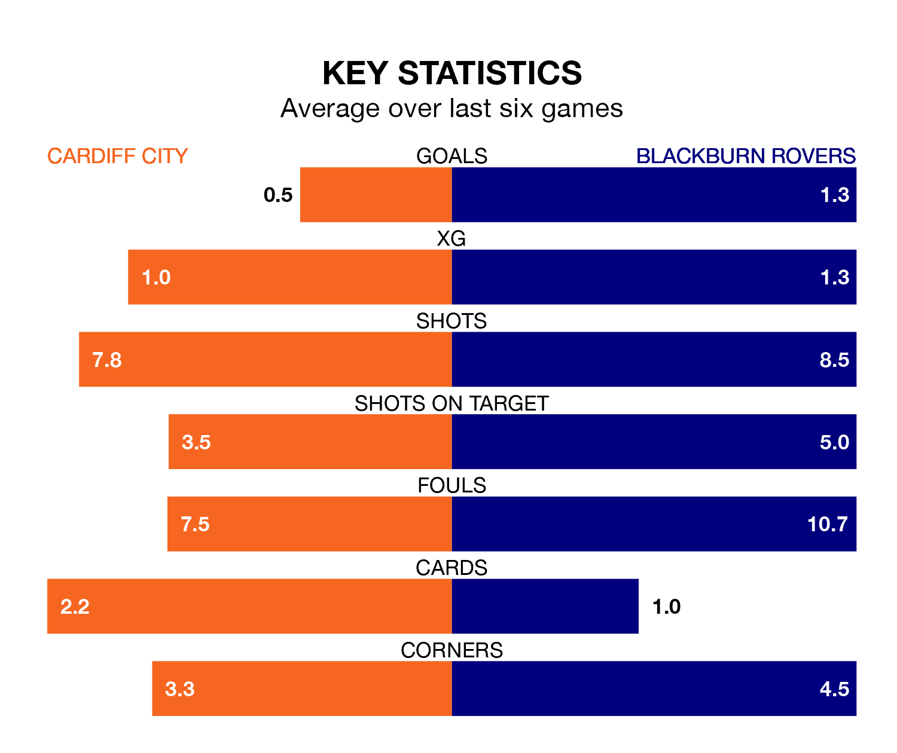

Cardiff City welcome Blackburn Rovers to the Cardiff City Stadium on late Tuesday looking to pick up points to end their three-game losing streak.
Cardiff's struggles have left them with just three points from their last six EFL Championship matches, while their opponents have earned five from a possible 18.
In Samuel Szmodics, Blackburn have the league's sharpest shooter so far this season. He has notched 18 goals in 30 appearances.
His goal rate of one every 147 minutes is quicker than that of Ike Ugbo, Cardiff's top scorer with a goal every 186 minutes, and a total of seven goals in 26 games.
In the last 10 years, Cardiff and Blackburn have played each other on 16 occasions. Cardiff won three of them, Blackburn six, and they drew seven times.
On average, the Bluebirds scored 0.9 goals and Blackburn 1.4 in those matches.
Their last meeting was on October 21, when Blackburn won 1-0 at home.
With 37 goals in 32 games so far this season, City are scoring at below the league average rate with 1.2 goals per game. And they are conceding more than average, letting in 47 goals at a rate of 1.5 per game.
Rovers, meanwhile, are above average scorers, with 1.5 goals per game, compared to a league average of 1.4. They have conceded 1.8 goals per game.
The away team are 17th in the table after 32 games, of which they have won 11 and drawn four, earning 37 points.
The Bluebirds are three places ahead of Blackburn in 14th, with 12 wins and four draws putting them on 40 points.
Cardiff's last match was on Saturday, a 4-1 loss against Norwich City, with Jamilu Collins getting the goal for the Bluebirds.
Blackburn drew 2-2 with Preston North End last time out, also on Saturday, with Sam Gallagher and Szmodics on the scoresheet.
Tuesday's match will be refereed by Leigh Doughty, who has taken charge of seven EFL Championship games so far this season, issuing one red card and booking 25 players. He has not awarded any penalties.
The last Cardiff game Doughty refereed was a 2-0 home win against Rotherham United on September 30. His last Blackburn match was their 4-2 win at home against Birmingham City on November 29.
Updated: 12:18 (UTC), 19/02/24